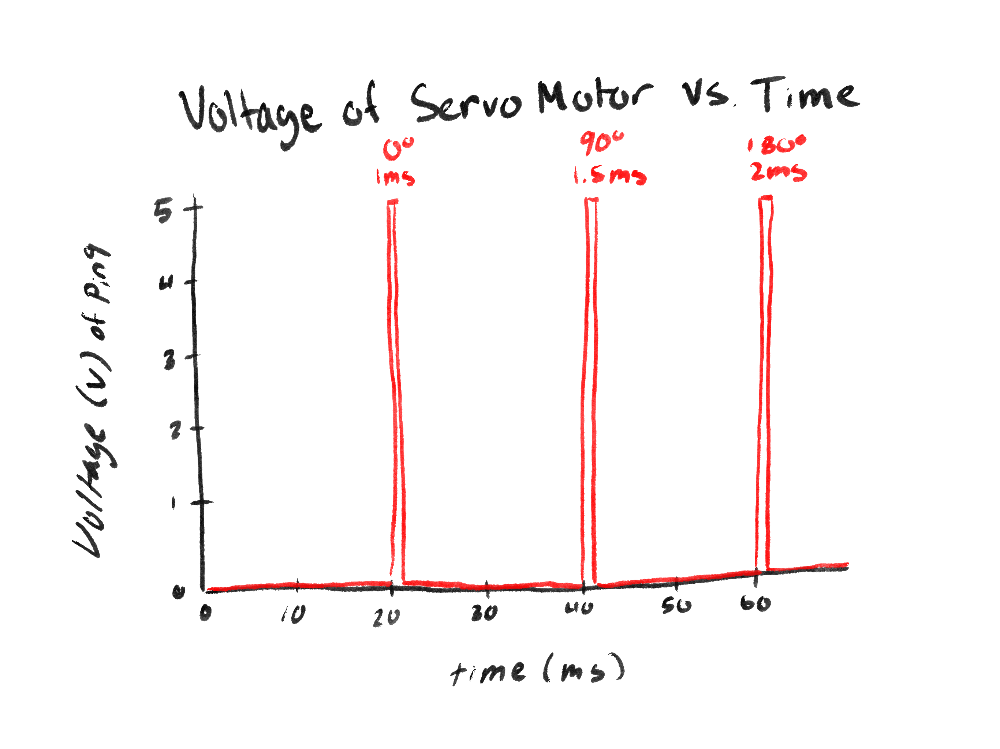

Overview

This project uses an HC-SR04 ultrasonic sensor and a DHT11 temperature sensor as inputs, and an RGB LED as an output to visualize the distance of an object.
An LCD (QAPASS 1602A) displays both the current distance and temperature reading.
As an object moves closer, the LED transitions smoothly from red (far) to green (near), showing a range of yellow and orange hues in between.
The LCD also shows “N/A” when no object is detected within range.
Circuit Images
Calculations:
For this circuit, I used the same resistor values for the RGB bulb as in my previous assignment since those calculations already ensured
that each LED color stayed safely below 20 mA, allowing for continuous and stable operation. I also used a 10 kΩ resistor for the
LCD screen to help control the contrast and brightness of the display. This resistor limits the voltage reaching the LCD’s contrast pin (V0),
making the white blocks dimmer and allowing the text to appear sharper and more readable under different lighting conditions.
Arduino Code
#include //NewPing.h
#include //LiquidCrystal.h
#include //DHT.h
// pin setup
#define TRIG_PIN 12
#define ECHO_PIN 13
#define MAX_DISTANCE 400 // sensor max distance
#define RED_PIN 9
#define GREEN_PIN 10
#define DHTPIN 11
#define DHTTYPE DHT11
// initialize sensor objects
NewPing sonar(TRIG_PIN, ECHO_PIN, MAX_DISTANCE);
LiquidCrystal lcd(2, 3, 4, 5, 6, 7);
DHT dht(DHTPIN, DHTTYPE);
void setup() {
lcd.begin(16, 2);
dht.begin();
pinMode(RED_PIN, OUTPUT);
pinMode(GREEN_PIN, OUTPUT);
}
void loop() {
// read ultrasonic distance
unsigned int uS = sonar.ping_median(3);
float distance = (uS / 2.0) * 0.0343; // convert to cm
// read temperature
float temp = dht.readTemperature();
lcd.clear();
// distance display
lcd.setCursor(0, 0);
lcd.print("Dist: ");
if (uS == 0 || distance > 30 || distance <= 0) {
lcd.print("N/A");
} else {
lcd.print((int)distance);
lcd.print(" cm");
}
// temperature display
lcd.setCursor(0, 1);
if (isnan(temp)) {
lcd.print("Temp: Error");
} else {
lcd.print("Temp: ");
lcd.print(temp, 2); // 2 decimal places
lcd.print(" C");
}
// LED
if (uS == 0 || distance > 30 || distance <= 0) {
analogWrite(RED_PIN, 0);
analogWrite(GREEN_PIN, 0);
} else {
distance = constrain(distance, 5, 30);
float ratio = (distance - 5.0) / (30.0 - 5.0);
int red = pow(ratio, 0.5) * 255; // red increases as it gets farther
int green = pow(1 - ratio, 2.2) * 255; // green increases as it gets closer
analogWrite(RED_PIN, red);
analogWrite(GREEN_PIN, green);
}
}
Additional Questions
1: Draw a graph with the x-axis as time and the y-axis as voltage at pin 9 with respect to ground.

Chart illustrating PWM voltage levels across an LED for analogWrite values of 64, 128, and 255.
A servo motor interprets position based on the width of a control pulse sent every 20 ms (50 Hz).
Each pulse carries a short 5 V HIGH signal lasting between 1.0 ms and 2.0 ms, which corresponds to the servo angle.
A 1.0 ms pulse tells the servo to move to 0°, a 1.5 ms pulse to 90°, and a 2.0 ms pulse to 180°.
The rest of the 20 ms frame remains LOW, maintaining a consistent signal frequency.
As shown in the graph, the pulses widen as the angle increases, encoding position through pulse width modulation (PWM) rather than voltage level.
2: Your input device is slightly broken, leading it to give an erroneous reading 1% of the time. How can we address this? (Pseudo code)
To address random incorrect readings, we can take multiple measurements and compare them, using either the median or an average to reduce the impact of outliers:
Function getAverageReading(sensorPin):
Set N to 10 readings
Set total to 0
For i from 0 to N-1:
Read current sensor value from sensorPin
Add value to total
Delay 10 ms to avoid taking identical readings
End for
average = total / N
Return average
End function
This ensures that if one value (about 1% of readings) is incorrect, it will have minimal impact on the final result.
3: Your input device is slightly noisy, leading the measurement to randomly deviate from the true measurement up or down by 10%. How can we address this? (Pseudo code)
To smooth out noisy data, we can implement a moving average filter that continuously averages several recent readings:
Set numReadings to 10
Create array readings[numReadings]
Set index to 0
Set total to 0
Function smoothInput():
// Remove the oldest reading from total
total = total - readings[index]
// Take a new sensor reading
readings[index] = analogRead(A0)
// Add the new reading to total
total = total + readings[index]
// Move index to the next position (loop back to 0 after last)
index = (index + 1) modulo numReadings
// Calculate and return the average value
Return total / numReadings
End function
This method reduces short-term fluctuations by averaging data, providing a steadier and more reliable signal.
4: Did you use AI tools in completing this assignment?
I did use AI tools to help ideate and debug portions of my arduino code, but the overall structure and logic were developed by me,
using examples on line as a reference.